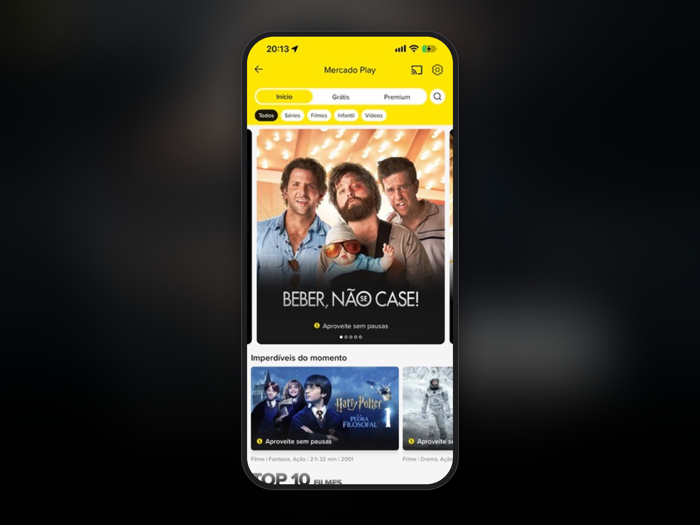
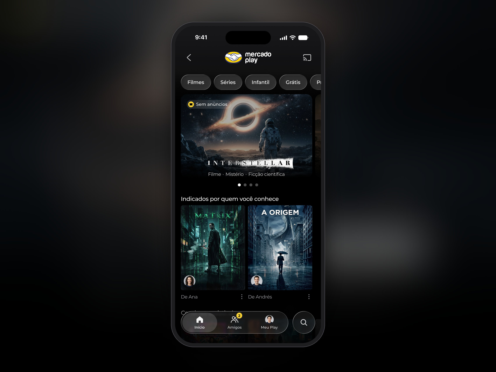
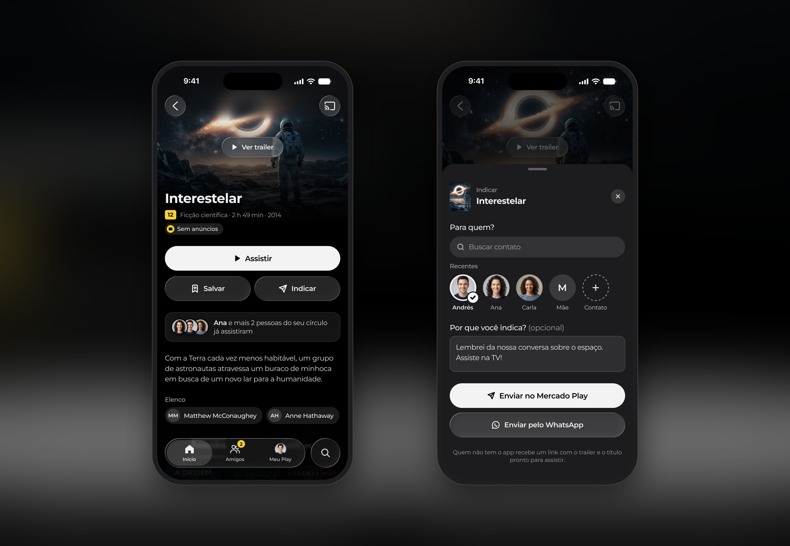
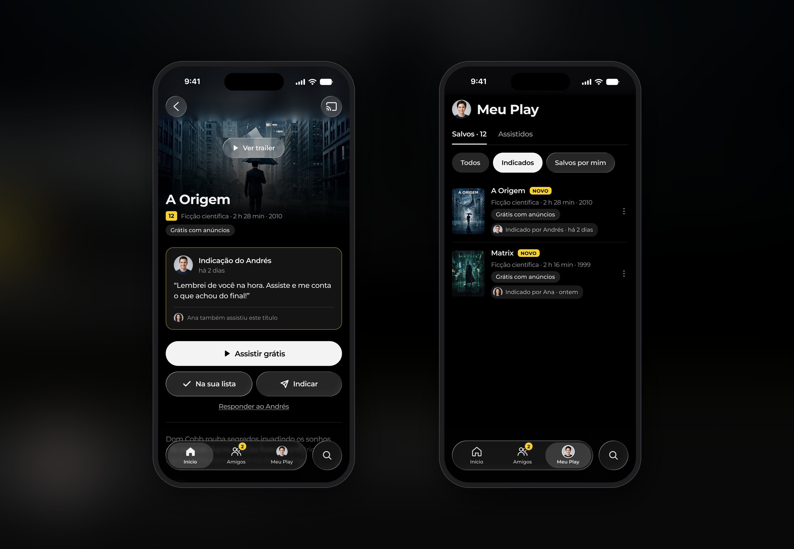
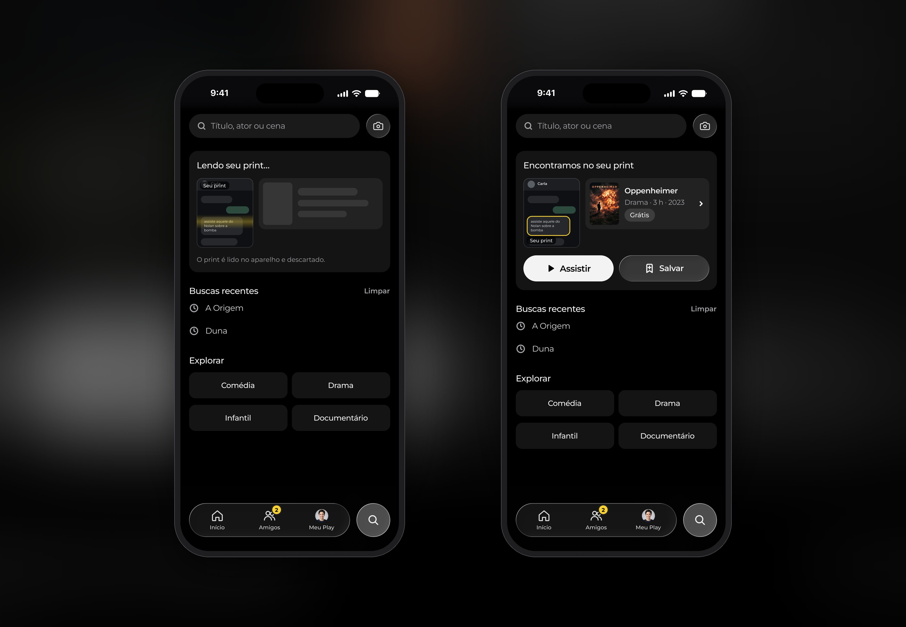
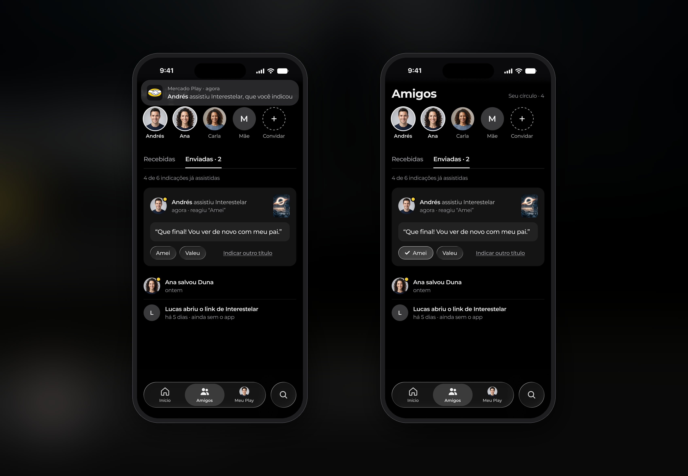

What I did
- Problem framing against the business model
- Benchmark across streaming, games, social and niche apps
- Critique of the current app and protopersonas
- Information architecture for mobile and TV
- Interaction and content design, high fidelity in Figma
- Navigable prototype and a validation plan
Overview
A study project on Mercado Play, Mercado Livre’s free, ad-supported streaming service. The question I set out to answer: how could the app make use of the recommendations people already trade with friends and family?
I started from the app as it is. The home screen splits the catalogue by price, into Free and Premium tabs. A banner takes almost half the screen, the Top 10 numbers fade into the light background, and nothing on it is personal: no list, no continue watching, no fixed navigation. Sharing a title sends a loose link, and nothing comes back.
Meanwhile people recommend films to each other all the time, on WhatsApp and at dinner, often by describing them instead of naming them. The recommendation gets lost between the person who suggests and the person who watches, and the app gives nobody a personal reason to open it. For a catalogue paid for by ads, fewer sessions mean fewer ads served.
So the project fits in one line: no recommendation from someone you trust gets lost. What served that line stayed in the first phase. The rest was cut or moved to a roadmap, with market evidence behind each call.

3 takeaways
- 01Giving the recommendation somewhere to land
- 02A title nobody remembers
- 03A reason for the sender to come back
01
Giving the recommendation somewhere to land
Every streaming app I studied treats sharing as a way out: a loose link, and nothing left behind for the person who gets it. Here Recommend sits next to Save, under the play button. You pick people from your circle, add a line on why if you want, and send it in the app or over WhatsApp. Someone without an account gets a link, and the title waits for them after sign-up.
On the other end, the title arrives with its origin: who sent it, when, and what they said. It shows up in a row on the home screen and on the TV, and stays in My Play, labelled. I first tried recommendations as a highlighted block on the home screen. It competed with the content, so it became an ordinary row, with the friend’s avatar on the poster as the only difference.

02
A title nobody remembers
The scene that framed the work: Andrés’s father recommends films the way most people do, by describing them. “That Nolan one about the bomb.” Andrés ends up on Google, searching by actor and plot. The recommendation existed. The app had nowhere to receive it.
So search takes a screenshot of the conversation. The app reads it on the device, finds the title in the catalogue and offers Watch and Save without leaving search. The image is discarded and only the title is kept. Inside Mercado Play the camera looks for films and series only. The current app returns products for sale when you photograph a poster, and mixing the shop with the catalogue was part of the problem.

03
A reason for the sender to come back
The design did a lot for whoever receives a recommendation. The riskier question was why anyone would send one through the app instead of WhatsApp. The answer is the one thing WhatsApp cannot give: knowing the other person watched it.
The Friends tab holds what you received, what you sent and how it landed. “Andrés watched Interstellar, which you recommended”, with his reaction and a one-tap reply that closes the exchange without turning the app into a messenger. That return is the riskiest assumption, so it is the first I would test: a fake door that swaps Share for Recommend and counts taps, then an A/B test on sessions per user, with notification opt-outs as the guardrail.

What I cut
Watching together in real time: Disney+ ended GroupWatch in 2023 and Prime Video removed Watch Party in 2024 for low use, so it became a dated invitation in phase two. An open chat became a short thread tied to the recommendation, also phase two. Live friend activity was dropped, because what someone watches is more private than what they listen to.
How I worked
Five short stages: understand, research, diverge and cut, design, propose validation. AI sped up research, production and critique, including simulated design reviews. The framing, the scope and the design decisions were mine, and every figure was checked at the source or stated as an assumption.
Get in touch
Happy to walk you through the decisions behind these screens.
Ask me about it